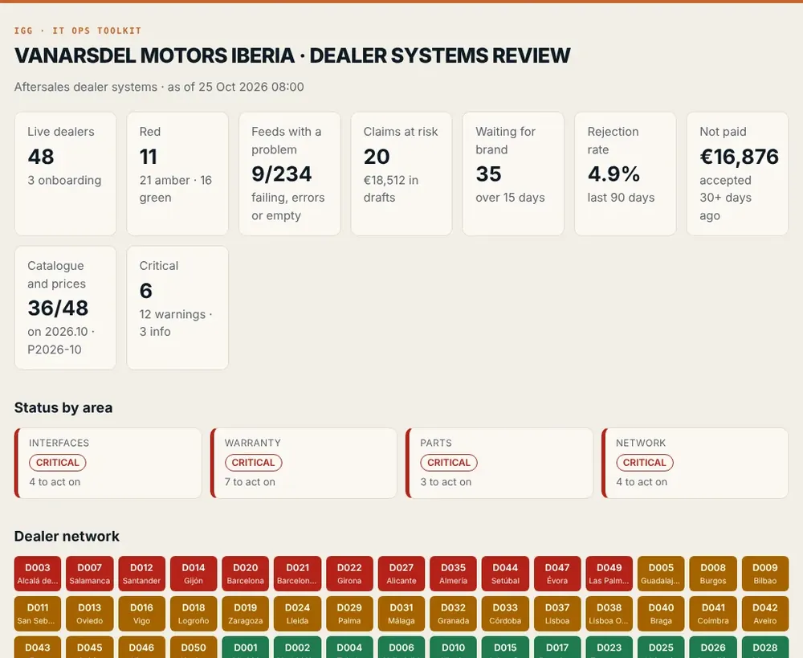

El feed de garantías de un concesionario que se para un jueves por la noche pasa inadvertido hasta que el concesionario pregunta el martes por qué sus reclamaciones no tienen respuesta, y un trabajo del DMS que termina bien con cero registros no avisa a nadie. Esos son los fallos que busca la revisión semanal de la red de concesionarios que acompaña a este post, una herramienta de código abierto que se ejecuta con datos de ejemplo de un importador inventado con 53 concesionarios en España y Portugal, dos semanas de ejecuciones de interfaces y unas 4.600 reclamaciones de garantía, con los problemas puestos a propósito.
El DMS, el sistema de gestión que usa cada concesionario, envía a la marca las órdenes de reparación y las garantías mediante feeds. La revisión marca los feeds sin una ejecución correcta dentro de su límite, y en esos dos una sola noche fallida ya es rojo.
Un catálogo de recambios viejo detrás de una tasa de rechazo que sube
Un concesionario que sigue con el catálogo del mes pasado envía operaciones de mano de obra que el sistema de garantías ya no acepta, así que su tasa de rechazo sube y se acaba hablando de reclamaciones mal hechas. La revisión compara el catálogo y la tarifa que cada concesionario ha aplicado de verdad con los vigentes y sus periodos de gracia; una tarifa que no se aplicó significa una semana de recambios vendidos al precio equivocado.
En garantías, lista los borradores cerca o fuera del límite de envío, las reclamaciones que esperan la decisión de la propia marca, los posibles duplicados con el mismo VIN, el número de bastidor, y la misma operación, y las reclamaciones aceptadas nunca pagadas.
Un concesionario cerrado con credenciales que funcionan
La herramienta señala además versiones de DMS no certificadas para las interfaces de la marca, concesionarios que abren con tareas del checklist sin cerrar y concesionarios dados de baja que siguen enviando datos: uno que cerró en septiembre puede seguir teniendo credenciales de interfaz que funcionan. El resultado es una cuadrícula roja, ámbar y verde de la red, un orden del día para la reunión semanal y ficheros CSV por tema.
Cómo usarlo con datos reales
Un exportador de solo lectura en PowerShell con consultas SQL de ejemplo rechaza cualquier cosa que no sea un único SELECT. La herramienta funciona con Python y solo la librería estándar, con 15 tests y un runbook. Lo propuesto es empezar con las exportaciones reales de una región y enviar la línea de cada concesionario en rojo a su jefe de zona antes de la reunión.
De dónde sale
La herramienta nace de trabajar con sistemas de gestión de concesionarios y redes de concesionarios, gestión de garantías y catálogos de recambios de posventa, junto con integraciones, proveedores, SLAs y OLAs. La lección que hay detrás es que la mayoría de los problemas del concesionario tienen una causa de sistemas un paso antes: una tasa de rechazo que en realidad es un catálogo viejo.
¿Quieres llevarlo a tu entorno o adaptarlo a tu caso? Escríbeme y lo vemos.
Tech Career Lab · newsletter
¿Te ha servido? Cada dos semanas envío una idea práctica para perfiles IT: LinkedIn, proyectos, networking y procesos de selección.
Apúntate y llévate las 33 ideas →